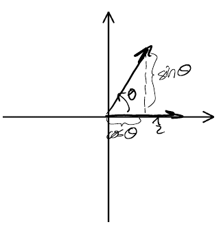
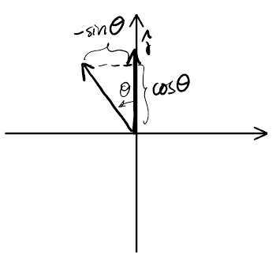

Matrices
Table of Contents
1. Matrices
Matrices are useful because a lot of mathematical concepts can be related by linear systems. For example, consider a change of coordinate systems from \((x_1,x_2,x_3)\) to \((u_1,u_2,u_3)\) according to the following rule:
\begin{aligned} u_1 & = 2x_1 + 3x_2 + 3x_3 \\ u_2 &= 2x_1 + 4x_2 + 5x_3 \\ u_3 &= x_1 + x_2 + 2x_3 \end{aligned}We can rewrite this using matrices and matrix multiplication:
\[\begin{bmatrix} 2 & 3 & 3 \\ 2 & 4 & 5 \\ 1 & 1 & 2 \end{bmatrix} \begin{bmatrix}x_1 \\ x_2 \\ x_3\end{bmatrix} = \begin{bmatrix}u_1 \\ u_2 \\ u_3 \end{bmatrix}\]
Or, conveniently:
\[ AX = U \]
This works because matrix multiplication is a dot product between the rows of the first matrix and the columns of the second matrix. This also implies that there are strict limitations on what matrices can be multiplied together. In a matrix product \(AB\), the width of A must equal the height of B. It also follows that matrix multiplication is not commutative.
2. Special Matrics
2.1. Identity Matrix
It can be intuitively seen that the n-by-n identity matrix is the matrix of all zeroes except for the diagonal, which is all ones. For example, for a 3 by 3 identity matrix:
\[ I_{3\times3} = \begin{bmatrix}1 & 0 & 0 \\ 0 & 1 & 0 \\ 0 & 0 & 1 \end{bmatrix} \]
2.2. Orthogonal Matrices
Orthogonal matrices are matrices that satisfy the conditions:
\begin{aligned} A^TA &= I \\ AA^T &= I \end{aligned}This means that the dot product of the rows/columns of A with themselves must equal 1, meaning that the lengths of each of the row/column vectors must be 1. Since all the other places in the identity matrix are 0, this means that the dot product of each of the row/column vectors with every other row/column vector equals 0, or they are perpendicular with each other. In other words:
- Each row and column are of unit length, and
- Each row or column are perpendicular with every other row or column, respectively.
There are two types of orthogonal matrices: rotation matrices and reflection matrices.
2.3. Rotation Matrix
A rotation matrix can be used to rotate a matrix in space. For example, we can use the following rotation matrix to rotate vectors by 90-degrees, or map \(\hat{i}\) onto \(\hat{j}\) and vice versa:
\[ R = \begin{bmatrix} 0 & -1 \\ 1 & 0 \end{bmatrix} \]
Notice that if we apply this matrix twice, or \(R^2\), this is the equivalent of rotating by 180 degrees; or, the opposite of the identity matrix. In other words, \(R^2 = -I\).
More generally, we can find the rotation matrix \(R\) for rotating any 2D vector \(\begin{bmatrix} a\hat{i} \\ b\hat{j} \end{bmatrix}\) by an angle of \(\theta\). To do this, we shall first consider $\hat{i}$and \(\hat{j}\) separately. We can do this because:
\begin{aligned} \hat{i} &= \begin{bmatrix} 1 \\ 0 \end{bmatrix} \\ \hat{j} &= \begin{bmatrix} 0 \\ 1 \end{bmatrix} \end{aligned}Notice that when you multiply \(R\) by each of these unit vectors, only the values in the first column affect \(\hat{i}\), and only the values in the second column affect \(\hat{j}\), with the first row determining the x-component, and the second row determining the y-component.
For \(\hat{i}\), using trigonometry to determine the x and y components after rotation:

Similarly, for \(\hat{j}\):

Therefore, the generalized rotation matrix is:
\begin{aligned} R = \begin{bmatrix} \cos \theta & -\sin \theta \\ \sin \theta & \cos \theta \end{bmatrix} \end{aligned}2.4. Inverse Matrix
The inverse matrix of \(A\) is defined as a matrix \(M=A^{-1}\) such that:
\begin{aligned} AM &= I \\ MA &= I \end{aligned}Realize that for this to work, since \(I\) is a square matrix, for \(A\) to have an inverse it must also be a square matrix. The inverse matrix is useful because given a linear system \(AX=B\), we can solve for the variables \(X\) by \(X=A^{-1}B\):
\begin{aligned} AX &= B \\ A^{-1}(AX) &= A^{-1}B \\ X &= A^{-1}B \end{aligned}2.4.1. Cofactor Method
The cofactor method is an algorithm that we can use to calculate the inverse matrix by hand. It says that:
\[ A^{-1} = \frac{1}{\det(A)} \text{ adj}(A) \]
The \(\text{adj}(A)\) is the adjoint matrix of \(A\).
Next, we shall illustrate the steps to do so with an example for the inverse matrix of \(A\) such that:
\[ A = \begin{bmatrix} 2 & 3 & 3 \\ 2 & 4 & 5 \\ 1 & 1 & 2 \end{bmatrix} \]
- Step 1: Minors
First, we build a matrix of minors. To do so, we construct a matrix of the same dimensions as \(A\). Each entry in this matrix is equivalent to the determinant formed by deleting the row and column corresponding to that entry, in \(A\). For example, the top left corner of the matrix of minors would be:
\[ \left| \begin{matrix} 4 & 5 \\ 1 & 2 \end{matrix} \right| \]
Doing this calculation, we end up with the following matrix of minors:
\[\begin{bmatrix} 3 & -1 & -2 \\ 3 & 1 & -1 \\ 3 & 4 & 2 \end{bmatrix}\]
- Step 2: Cofactors
Now, we apply cofactors. We flip the signs in the matrix of minors in the following checkerboard pattern:
\[\begin{matrix} + &- & + \\ - & + & - \\ + & - & + \end{matrix}\]
The \(+\) indicates we leave the number along, and the \(-\) indicates that we flip the sign. For our example, this leaves us with:
\[\begin{bmatrix} 3 & 1 & -2 \\ -3 & 1 & 1 \\ 3 & -4 & 2 \end{bmatrix}\]
- Step 3: Transpose
Next, we transpose the matrix; we switch the rows and columns:
\[\begin{bmatrix} 3 & -3 & 3 \\ 1 & 1 & -4 \\ -2 & 1 & 2 \end{bmatrix}\].
This is the adjoint matrix.
- Step 4: Divide by Determinant
Finally, to get the inverse, we divide by the determinant of \(A\), which is \(3\) in this case. Therefore:
\[ A^{-1} = \frac{1}{3} \begin{bmatrix} 3 & -3 & 3 \\ 1 & 1 & -4 \\ -2 & 1 & 2 \end{bmatrix} \]
2.4.2. 2x2 Matrices
For 2x2 matrices, it is often simpler to know that the inverse of a matrix is:
\[ A^{-1} = \frac{1}{\det(A)} \begin{bmatrix} d & -b \\ -c & a \end{bmatrix} \]
2.4.3. Invertible Matrices
From our algorithm of cofactors, notice that it doesn't work when the determinant of A in the denominaotr in 0. This means that not all square matrices are invertible, as they must satisfy the condition:
\[ A \text{ is invertible } \iff \det(A) \neq 0 \]